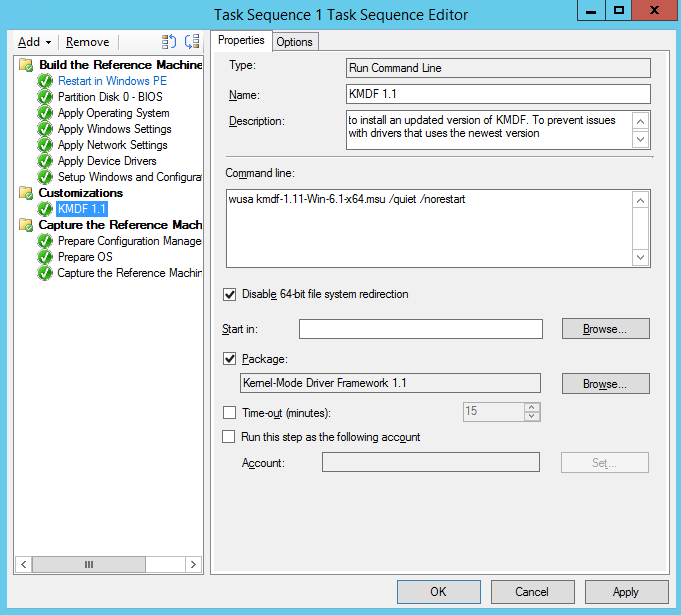

Компонент диспетчера об'єктів Windows режиму ядра керує об'єктами. Файли, пристрої, механізми синхронізації, розділи реєстру і т. д. представляються як об'єкти ядра.
Кожен об'єкт має заголовок (що містить відомості про об'єкт, наприклад, його ім'я, тип і розташування), а також текст (що містить дані у форматі, визначеному кожним типом об'єкта).
Windows має понад 25 типів об'єктів. Існують такі типи:
- Файли;
- Пристрої;
- Потоки;
- Процеси;
- Події;
- Mutexes;
- Семафори;
- Розділи реєстру;
- Завдання;
- Розділи;
- Маркери доступу;
- Символічні зв'язки.
Диспетчер об'єктів керує об'єктами у Windows, виконуючи такі основні завдання:
- Управление созданием и уничтожением объектов.
- Хранение базы данных пространства имен объектов для отслеживания сведений об объекте.
- Отслеживание ресурсов, назначенных каждому процессу.
- Отслеживание прав доступа для конкретных объектов для обеспечения безопасности.
- Управление временем существования объекта и определение, когда объект будет автоматически уничтожен для перезапуска пространства ресурсов.

Диспетчер вводу-виводу Windows Kernel-Mode
Диспетчер вводу-виводу Windows у режимі ядра управляє взаємодією між програмами та інтерфейсами, що надаються драйверами пристроїв. Так як пристрої працюють зі швидкостями, які можуть не відповідати операційній системі, взаємодія між операційною системою та драйверами пристроїв, в першу чергу, здійснюється за допомогою пакетів запитів вводу-виводу (IRP). Ці пакети нагадують мережні пакети або пакети повідомлень Windows. Вони передаються з операційної системи до певних драйверів і з одного драйвера до іншого.
Windows система вводу-виводу надає багаторівневу модель драйвера, яку називають стеками. Зазвичай IRP переходять від одного драйвера до іншого в тому ж стеку, щоб спростити обмін даними. Наприклад, драйвер джойстика повинен взаємодіяти з USB-концентратором, який, у свою чергу, повинен взаємодіяти з USB-контролером вузла, який потім повинен взаємодіяти через шину PCI з рештою обладнання комп'ютера. Стек складається з драйвера джойстика, USB-концентратора, USB-контролера вузла та шини PCI. Ця взаємодія координується тим, що кожен драйвер у стеку відправляє та отримує IRP.
Диспетчер транзакцій ядра Kernel-Mode Windows
Если вы работаете с несколькими операциями чтения и записи в одном или нескольких хранилищах данных и все операции должны выполняться атомарно или не сохранить целостность данных, может потребоваться сгруппировать операции вместе как единую транзакцию. Если все операции в транзакции выполняются успешно, транзакцию можно зафиксировать таким образом, чтобы все изменения сохранялись как атомарные единицы. В случае сбоя можно выполнить откат транзакции, чтобы хранилища данных были восстановлены в исходном состоянии.
Диспетчер транзакций ядра (KTM) — это Windows компонент режима ядра, который реализует обработку транзакций в режиме ядра. KTM позволяет выполнять транзакции для компонентов режима ядра, таких как драйверы. Кроме того, KTM — это платформа, на которой основано транзакционная NTFS (TxF) в пользовательском режиме.